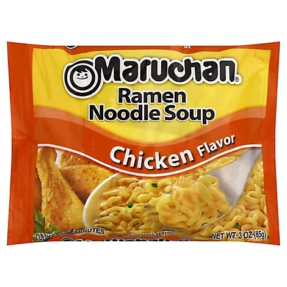

Back to Home
Egg Ramen

Description
Let's face it. It's late. You should probably be in bed. You might be a little tipsy. But you want a snack.
In times like these, Ramen fails to disappoint. ESPECIALLY when you cook it right. Keep reading.
Ingredients
- 1 package Maruchan Ramen (chicken flavor)
- 1 egg
- 1 slice of cheese
Steps
- Crack and beat one egg in a bowl.
- Before opening ramen package, crush noodles inside the package.
- Pour crushed ramen noodles into bowl with egg.
- Fill bowl with water, just enough to cover the noodles.
- Cook in microwave for 2 and a half minutes.
- Carefully add the slice of cheese and the chicken seasoning to the bowl and mix thoroughly.
- Cook for another 30 seconds.
- Immediately try to eat the ramen and scald your tongue.
- Wait 3 minutes for ramen to cool enough to eat.
- Let your late night munchies be satisfied.